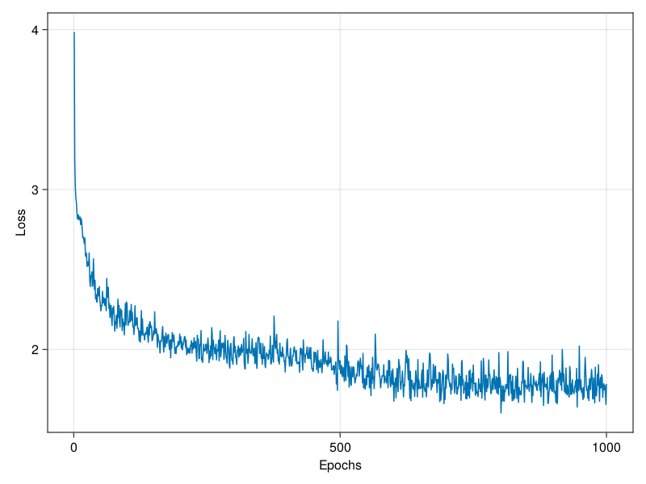
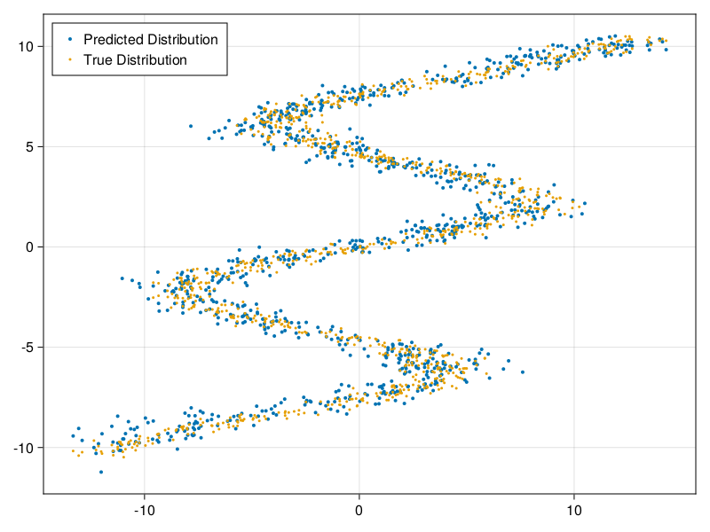
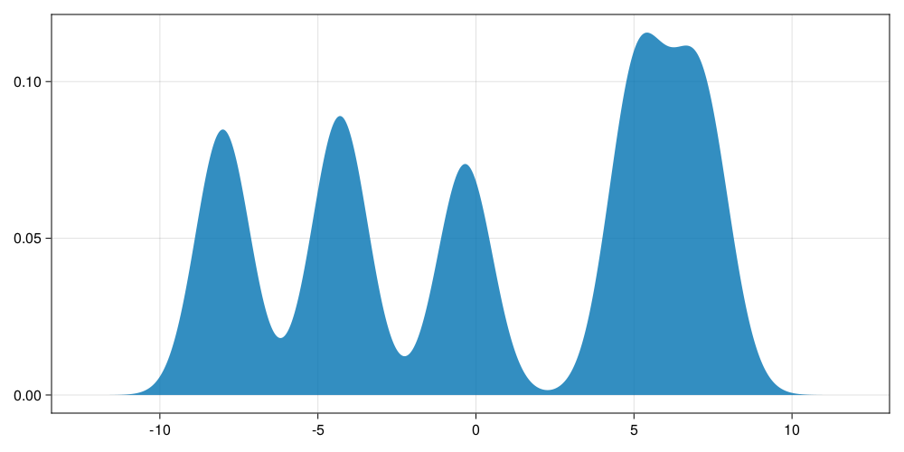

MixtureDensityNetworks
Mixture Density Networks (MDNs) were first proposed by Bishop (1994). We can think of them as a specialized type of neural network, which are typically employed when our data has a lot of uncertainty or when the relationship between features and labels is one-to-many. Unlike a traditional neural network, which predicts a point-estimate equal to the mode of the learned conditional distribution P(Y|X), an MDN maintains the full condtional distribution by predicting the parameters of a Gaussian Mixture Model (GMM). The multi-modal nature of GMMs are precisely what makes MDNs so well-suited to modeling one-to-many relationships. This package aims to provide a simple interface for defining, training, and deploying MDNs.
Example
First, let's create our dataset. To properly demonstrate the power of MDNs, we'll generate a many-to-one dataset where each x-value can map to more than one y-value.
using Distributions, CairoMakie, MixtureDensityNetworks
const n_samples = 1000
Y = rand(Uniform(-10.5, 10.5), 1, n_samples)
μ = 7sin.(0.75 .* Y) + 0.5 .* Y
X = rand.(Normal.(μ, 1.0))
fig, ax, plt = scatter(X[1,:], Y[1,:], markersize=5)
Now we'll define our model and training parameters. For this example, we construct a network with 2 hidden layers of size 128, 5 Gaussian mixtures, and we train for 1000 epochs. All other hyperparameters are set to their default values.
model = MDN(epochs=1000, mixtures=5, layers=[128, 128])We can fit our model to our training data by calling fit!(model, X, Y). This method returns the learning curve, which we plot below.
lc = fit!(model, X, Y)
fig, _, _ = lines(1:1000, lc, axis=(;xlabel="Epochs", ylabel="Loss"))
Let's evaluate how well our model learned to replicate our data by plotting both the learned and true distributions. We observe that our model has indeed learned to replicate the true distribution.
Ŷ = predict(model, X)
fig, ax, plt = scatter(X[1,:], rand.(Ŷ), markersize=3, label="Predicted Distribution")
scatter!(ax, X[1,:], Y[1,:], markersize=3, label="True Distribution")
axislegend(ax, position=:lt)
We can also visualize the conditional distribution predicted by our model at x = -2.0.
cond = predict(model, reshape([-2.0], (1,1)))[1]
fig = Figure(resolution=(1000, 500))
density(fig[1,1], rand(cond, 10000), npoints=10000)
Below is a script for running the complete example.
using MixtureDensityNetworks, Distributions, CairoMakie
const n_samples = 1000
const epochs = 1000
const mixtures = 5
const layers = [128, 128]
function main()
# Generate Data
Y = rand(Uniform(-10.5, 10.5), 1, n_samples)
μ = 7sin.(0.75 .* Y) + 0.5 .* Y
X = rand.(Normal.(μ, 1.0))
# Create Model
model = MDN(epochs=epochs, mixtures=mixtures, layers=layers)
# Fit Model
lc = fit!(model, X, Y)
# Plot Learning Curve
fig, _, _ = lines(1:epochs, lc, axis=(;xlabel="Epochs", ylabel="Loss"))
save("LearningCurve.png", fig)
# Plot Learned Distribution
Ŷ = predict(model, X)
fig, ax, plt = scatter(X[1,:], rand.(Ŷ), markersize=4, label="Predicted Distribution")
scatter!(ax, X[1,:], Y[1,:], markersize=3, label="True Distribution")
axislegend(ax, position=:lt)
save("PredictedDistribution.png", fig)
# Plot Conditional Distribution
cond = predict(model, reshape([-2.0], (1,1)))[1]
fig = Figure(resolution=(1000, 500))
density(fig[1,1], rand(cond, 10000), npoints=10000)
save("ConditionalDistribution.png", fig)
end
main()Index
MixtureDensityNetworks.MDNMixtureDensityNetworks.MDNMixtureDensityNetworks.fit!MixtureDensityNetworks.likelihood_lossMixtureDensityNetworks.predictMixtureDensityNetworks.predict_meanMixtureDensityNetworks.predict_mode
API
MixtureDensityNetworks.MDN — Typemutable struct MDNThe hyperparameters defining the classical MDN model.
Parameters
mixtures::Int64layers::Vector{Int64}η::Float64epochs::Int64batchsize::Int64fitresult::Any
MixtureDensityNetworks.MDN — MethodMDN(; mixtures=5, layers=[128], η=1e-3, epochs=1, batchsize=32)Defines an MDN model with the given hyperparameters.
Parameters
mixtures: The number of gaussian mixtures to use in estimating the conditional distribution (default=5).layers: A vector indicating the number of nodes in each of the hidden layers (default=[128,]).η: The learning rate to use when training the model (default=1e-3).epochs: The number of epochs to train the model (default=1).batchsize: The batchsize to use during training (default=32).
MixtureDensityNetworks.fit! — Methodfit!(
model::MDN,
X::Matrix{<:Real},
Y::Matrix{<:Real}
) -> Vector{Float64}
Fit the model to the data given by X and Y.
Parameters
model: The MDN to be trained.X: A dxn matrix where d is the number of features and n is the number of samples.Y: A 1xn matrix where n is the number of samples.
MixtureDensityNetworks.likelihood_loss — Methodlikelihood_loss(
μ::Matrix{<:Real},
σ::Matrix{<:Real},
pi::Matrix{<:Real},
y::Matrix{<:Real}
) -> Float64
Conpute the negative log-likelihood loss for a set of labels y under a Gaussian Mixture Model defined by the parameters μ, σ, and pi.
Parameters
μ: A mxn matrix of means where m is the number of Gaussian mixtures and n is the number of samples.σ: A mxn matrix of standard deviations where m is the number of Gaussian mixtures and n is the number of samples.pi: A mxn matrix of priors where m is the number of Gaussian mixtures and n is the number of samples.y: A 1xn matrix of labels where n is the number of samples.
MixtureDensityNetworks.predict — Methodpredict(
model::MDN,
X::Matrix{<:Real}
) -> Vector{Distributions.MixtureModel}
Predict the full conditional distribution P(Y|X).
Parameters
model: The MDN with which we want to generate a prediction.X: A dxn matrix where d is the number of features and n is the number of samples.
Returns
Returns a vector of Distributions.MixtureModel objects representing the conditional distribution for each sample.
MixtureDensityNetworks.predict_mean — Methodpredict_mean(
model::MDN,
X::Matrix{<:Real}
) -> AbstractVector
Predict the mean of the conditional distribution P(Y|X).
Parameters
model: The MDN with which we want to generate a prediction.X: A dxn matrix where d is the number of features and n is the number of samples.
Returns
Returns a vector of real numbers representing the mean of the conditional distribution P(Y|X) for each sample.
MixtureDensityNetworks.predict_mode — Methodpredict_mode(model::MDN, X::Matrix{<:Real}) -> Any
Predict the mean of the Gaussian with the largest prior in the conditional distribution P(Y|X).
Parameters
model: The MDN with which we want to generate a prediction.X: A dxn matrix where d is the number of features and n is the number of samples.
Returns
Returns a vector of real numbers representing the mean of the gaussian with the largest prior for each sample.